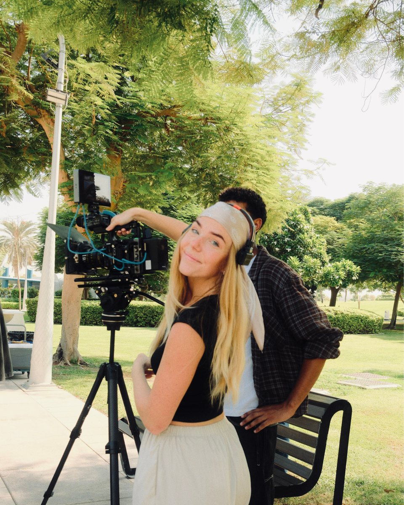

Johanna-Liisa Meema
Kaasasutaja ja loovjuht
Johanna turundustaust annab tema emotsioonidest lähtuvale jutustamisele sügavama mõõtme: fookuses pole ainult visuaal, vaid ka ehtsus, brändiga kooskõla ja sisuline side. Tema lähenemine ühendab strateegilise mõtlemise kvaliteetse pildikeelega, luues sisu, mis publikuga päriselt resoneerub.